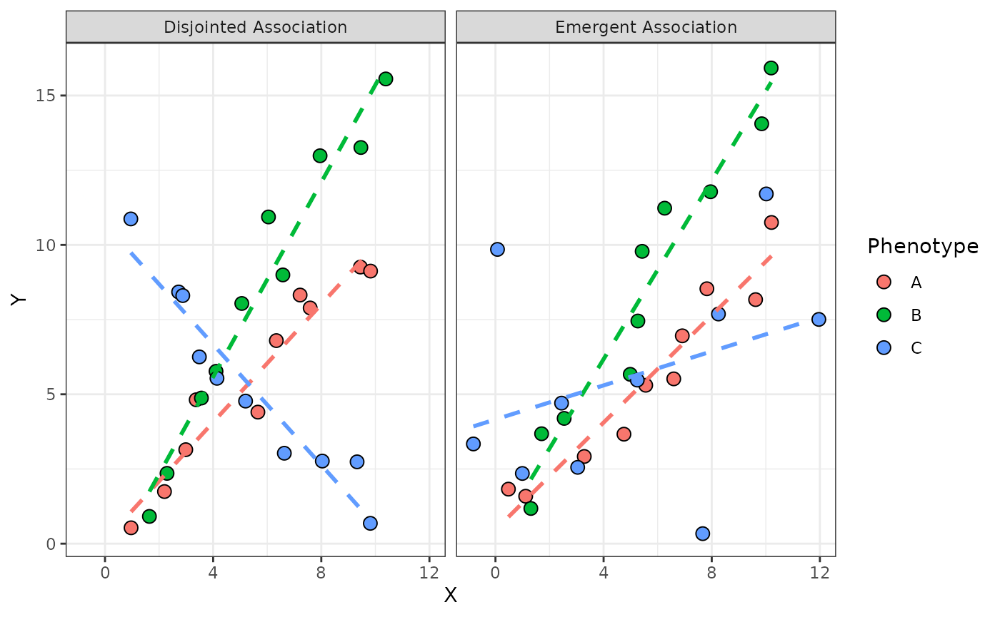

Overview
A common challenge in integrative analysis of high-dimensional data sets is subsequent biological interpretation. Anansi addresses this challenge by only considering pairwise associations that are known to occur a priori. In order to achieve this, we need to provide this relational information to anansi in the form of a (bi)adjacency matrix.
This vignette is divided by three sections:
Getting started: The full model
After determining which pairs of features should be investigated,
anansi fits several linear models for which it returns
summary statistics. These user has control over these models through the
formula argument in anansi().
Setup
See
the vignette for more about adjacency matrices and
weaveWeb().
# Setup AnansiWeb with some dummy data
tableY <- matrix(rnorm(60 * 10),
nrow = 60,
dimnames = list(ids = 1:60, y = LETTERS[1:10])
)
tableX <- matrix(rnorm(60 * 20),
nrow = 60,
dimnames = list(ids = 1:60, x = letters[1:20])
)
metadata <- data.frame(
subject_id = paste("subject", rep(1:30,2), sep = "_"),
treat_cat = rep(c("A", "B", "C"), each = 20),
score_num = rnorm(60)
)
web <- weaveWeb(y ~ x,
link = "none",
tableY = tableY, tableX = tableX
)Formula syntax
Anansi supports arbitrarily complex linear models as well as
longitudinal models sing the R formula syntax. The most basic model in
anansi would be y ~ x, where y is the feature
from tableY and x is the corresponding feature
in tableX. However, these two variables shouldn’t be
mentioned in the model. Rather, only additional covariates that could
interact with x should be provided in the formula argument.
We also see this back in the message:
out <- anansi(web,
formula = ~ treat_cat * score_num + Error(subject_id),
groups = "treat_cat",
metadata = metadata, return.format = "list"
)## Fitting least-squares for following model:
## ~ x + treat_cat + score_num + treat_cat:score_num + x:treat_cat + x:score_num + x:treat_cat:score_num
## with 'subject_id' as random intercept.## Running correlations for the following groups:
## A, B, CWith ‘full’ model, we mean the total influence of x,
including all of its interaction terms, on y. For example,
if our input formula was: y ~ x * (a + b + c). R rewrites
this as follows:
## y ~ x + a + b + c + x:a + x:b + x:cThe variables that constitute the ‘full’ effect of x would be:
x + x:a + x:b + x:c.
Differential association
In order to assess differences in associations based on one or more variables (such as phenotype or treatment), we make use of the emergent and disjointed association paradigm introduced in the context of proportionality and apply it outside of the simplex. Briefly, disjointed associations refer to the scenario where the of an association is dependent on a variable. On the other hand, emergent associations refer to the scenario where the of the scenario is dependent on a variable. See figure @ref(fig:fig-diffab) for an illustrated example.
An example of differential associations between hypothetical features Y and X. In both cases, phenotype C illustrates the differential association compared to phenotypes A & B. Disjointed associations describe the scenario where there is a detectable association in all cases, but the quality of that association differs. Emergent associations describe the case where an association can be detected in one case but not in another.

An example of differential associations between hypothetical features Y and X. In both cases, phenotype C illustrates the differential association compared to phenotypes A & B. Disjointed associations describe the scenario where there is a detectable association in all cases, but the quality of the association differs. Emergent associations describe the case where an association can be detected in one case but not in another.
The features Y and X are from different data sets and differential associations can be expressed in the style of R classical linear models: \(lm(Y \sim X \underline{\times Phenotype})\) and \(lm( abs( residuals( lm(Y \sim X)) ) \sim \underline{Phenotype})\) for disjointed and emergent associations, respectively.
Session info
## R version 4.4.3 (2025-02-28)
## Platform: x86_64-pc-linux-gnu
## Running under: Ubuntu 24.04.2 LTS
##
## Matrix products: default
## BLAS: /usr/lib/x86_64-linux-gnu/openblas-pthread/libblas.so.3
## LAPACK: /usr/lib/x86_64-linux-gnu/openblas-pthread/libopenblasp-r0.3.26.so; LAPACK version 3.12.0
##
## locale:
## [1] LC_CTYPE=C.UTF-8 LC_NUMERIC=C LC_TIME=C.UTF-8
## [4] LC_COLLATE=C.UTF-8 LC_MONETARY=C.UTF-8 LC_MESSAGES=C.UTF-8
## [7] LC_PAPER=C.UTF-8 LC_NAME=C LC_ADDRESS=C
## [10] LC_TELEPHONE=C LC_MEASUREMENT=C.UTF-8 LC_IDENTIFICATION=C
##
## time zone: UTC
## tzcode source: system (glibc)
##
## attached base packages:
## [1] stats graphics grDevices utils datasets methods base
##
## other attached packages:
## [1] ggplot2_3.5.1 patchwork_1.3.0 anansi_0.6.0 BiocStyle_2.34.0
##
## loaded via a namespace (and not attached):
## [1] SummarizedExperiment_1.36.0 gtable_0.3.6
## [3] xfun_0.51 bslib_0.9.0
## [5] htmlwidgets_1.6.4 Biobase_2.66.0
## [7] lattice_0.22-6 vctrs_0.6.5
## [9] tools_4.4.3 generics_0.1.3
## [11] stats4_4.4.3 tibble_3.2.1
## [13] pkgconfig_2.0.3 Matrix_1.7-2
## [15] desc_1.4.3 S4Vectors_0.44.0
## [17] lifecycle_1.0.4 GenomeInfoDbData_1.2.13
## [19] farver_2.1.2 compiler_4.4.3
## [21] textshaping_1.0.0 munsell_0.5.1
## [23] ggforce_0.4.2 GenomeInfoDb_1.42.3
## [25] htmltools_0.5.8.1 sass_0.4.9
## [27] yaml_2.3.10 tidyr_1.3.1
## [29] pkgdown_2.1.1 pillar_1.10.1
## [31] crayon_1.5.3 jquerylib_0.1.4
## [33] MASS_7.3-64 DelayedArray_0.32.0
## [35] cachem_1.1.0 abind_1.4-8
## [37] nlme_3.1-167 tidyselect_1.2.1
## [39] digest_0.6.37 purrr_1.0.4
## [41] dplyr_1.1.4 bookdown_0.42
## [43] labeling_0.4.3 splines_4.4.3
## [45] forcats_1.0.0 polyclip_1.10-7
## [47] fastmap_1.2.0 grid_4.4.3
## [49] colorspace_2.1-1 cli_3.6.4
## [51] SparseArray_1.6.2 magrittr_2.0.3
## [53] S4Arrays_1.6.0 withr_3.0.2
## [55] UCSC.utils_1.2.0 scales_1.3.0
## [57] rmarkdown_2.29 XVector_0.46.0
## [59] httr_1.4.7 matrixStats_1.5.0
## [61] igraph_2.1.4 ragg_1.3.3
## [63] evaluate_1.0.3 knitr_1.50
## [65] GenomicRanges_1.58.0 IRanges_2.40.1
## [67] MultiAssayExperiment_1.32.0 mgcv_1.9-1
## [69] rlang_1.1.5 Rcpp_1.0.14
## [71] glue_1.8.0 tweenr_2.0.3
## [73] BiocManager_1.30.25 BiocGenerics_0.52.0
## [75] jsonlite_2.0.0 R6_2.6.1
## [77] MatrixGenerics_1.18.1 systemfonts_1.2.1
## [79] fs_1.6.5 zlibbioc_1.52.0